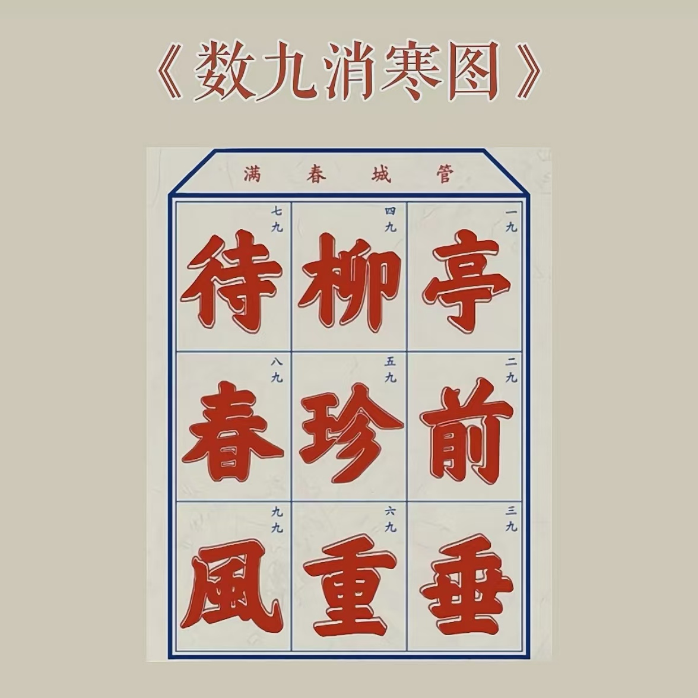

冬至快乐
D \ 2024年12月21日
在冬至这天，来看易安居士的一首词：
昨夜雨疏风骤，浓睡不消残酒。来看看王昱珩在冬至这天怎么说: “黑夜再长，也挡不住太阳的折返。寒尽春来，自然从不失约”。
试问卷帘人，却道海棠依旧。
知否，知否？
应是绿肥红瘦。

《数九消寒图》
这张图叫数九消寒图，上面这句话是：
亭前垂柳珍重待春風。
一共有九个字，而且这九个繁体字的每一画都是有九画。古人从冬至这一天开始，每天写一画，等写完这九个字，九九八十一天就过去了。春天也就该到来了。 冬至是北半球白昼最短，黑夜最长的一天。对古人来说，当全年中最长的夜被找到，人在时间面前才真正的自信起来。 面对冬天轰轰烈烈的长驱直入，人们不再恐惧，因为他们知道太阳的行程已经开始折返。冬与春，寒冷与温暖，正在悄无声息的反转逆袭。 大自然一直在默默教会我们，什么是物极必反，什么是峰回路转。让我们即使身在最长的黑夜，也始终心存希望，坚守岁月。 从今天开始，日光渐长，日温渐暖，让我们一笔一划跨过寒冷的光阴，一起等待春天的到来。